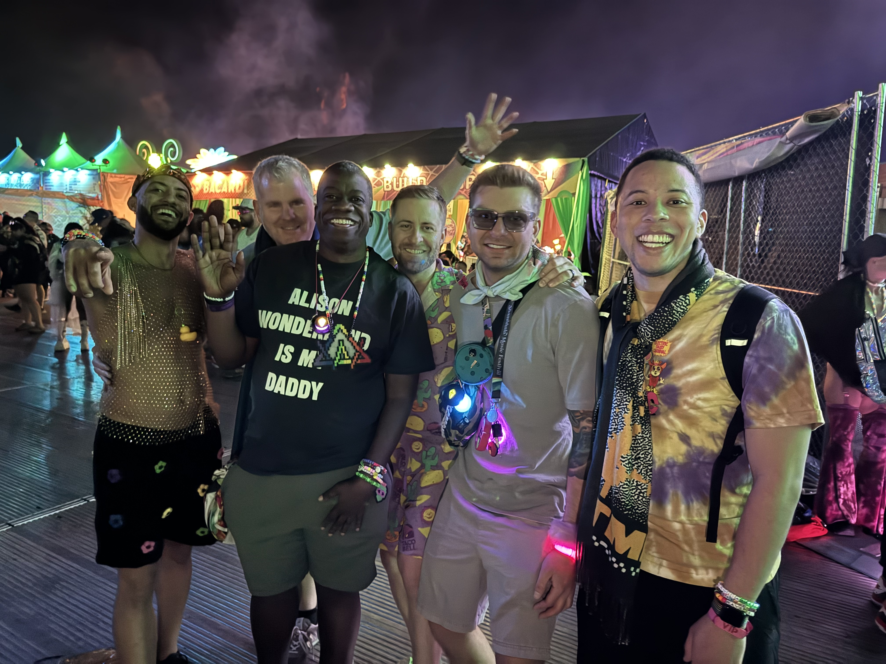

GORDON’S INVITATION / KEEP MAKING MEMORIES
Meet me where
the music is.
The people. The goosebumps.
The beautiful, ridiculous joy of being here.

01 / PULL OUT A NIGHT
02 / YOUR SELECTED NIGHT
Choose another night ↑The context behind this night
PORTOLA / CHOOSE YOUR EVENING
Portola.
Big sound.
Room for us.
Saturday at Pier 80. Choose the evening and see what you gain, and what you miss.
Make arrival, food & getting home easier
ARRIVE Doors at 1 p.m. Physical government photo ID, 21+, AXS mobile ticket. No re-entry.
MOVE Official rideshare zone: Pier 70. Free shuttle from Valencia & 24th, listed 12:30–11:30 p.m. Recheck before setting out.
A SWEET DETOUR Humphry Slocombe appears on the festival food list. Pick a flavor together. Food is extra, and the menu is an on-site discovery.
04 / MAKE SOMETHING TOGETHER
A tiny
after-hours
instrument.
Tap a sound. Build a rhythm. No performance required.
Original synthesized sounds, not artist recordings. Tapping a pad turns sound on. Sound-off stops playback.
05 / SAVE A LITTLE TIME FOR US
Your nights.
Your kind of joy.
Your choices stay in this browser. Copy them and send them to Gordon yourself; nothing is sent automatically.